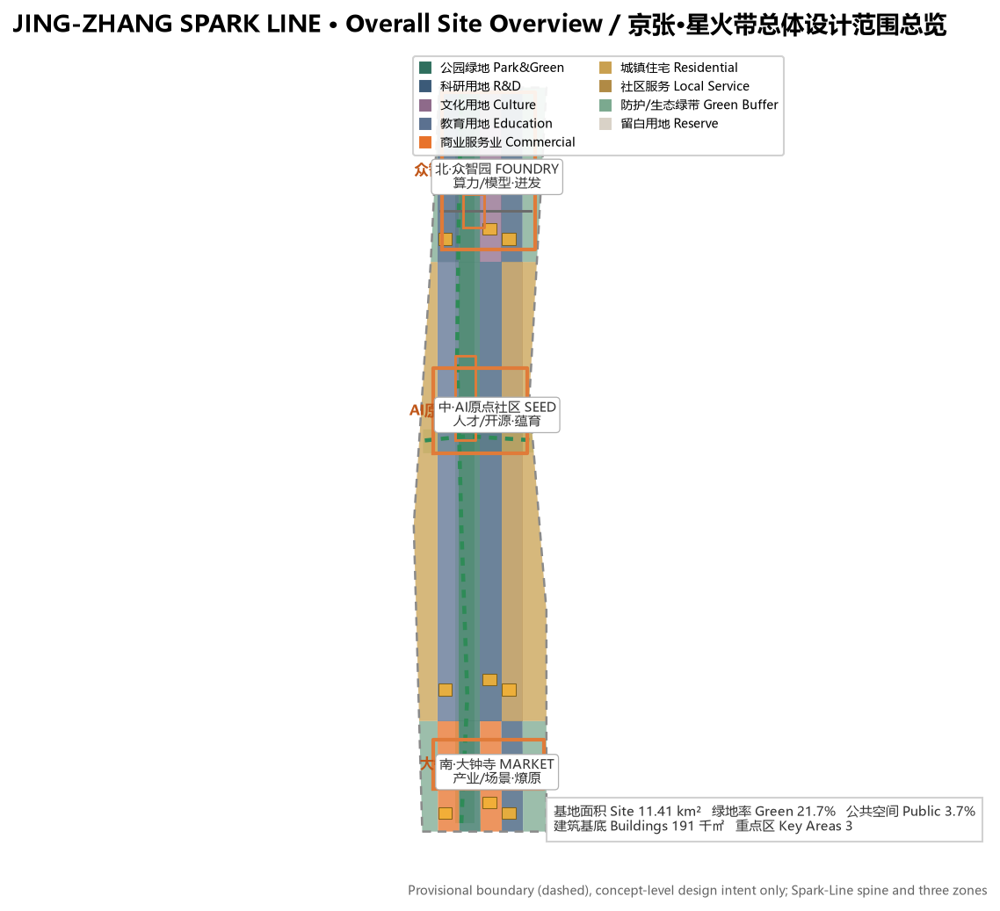
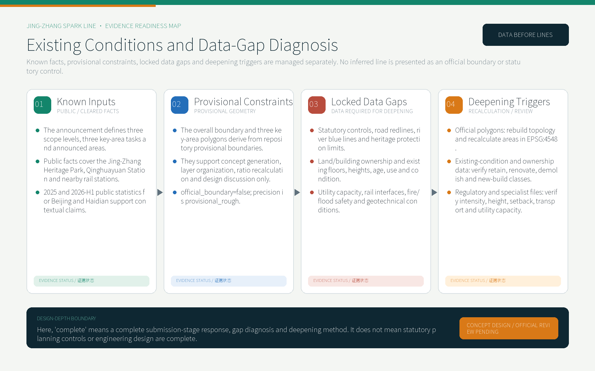
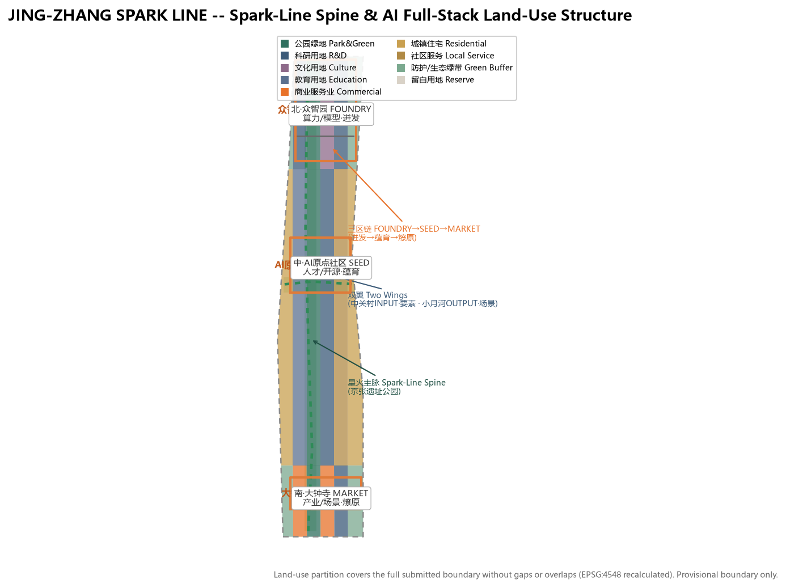
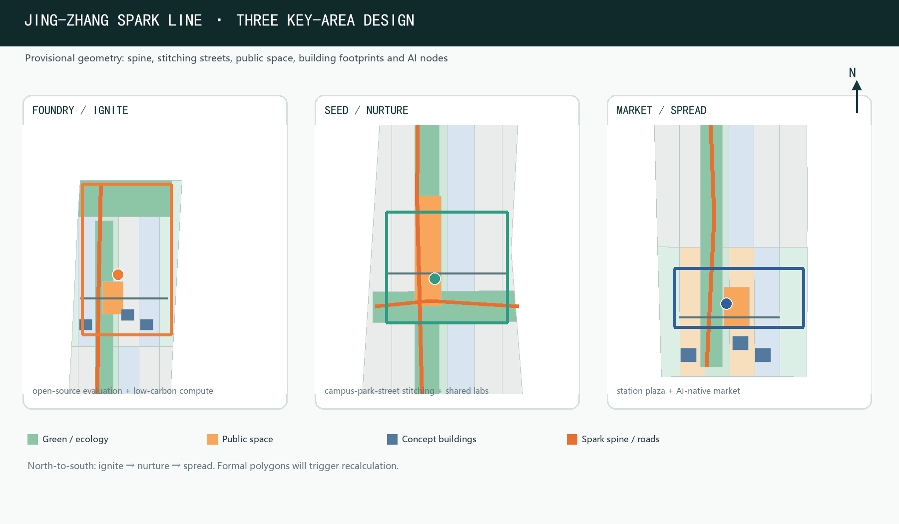
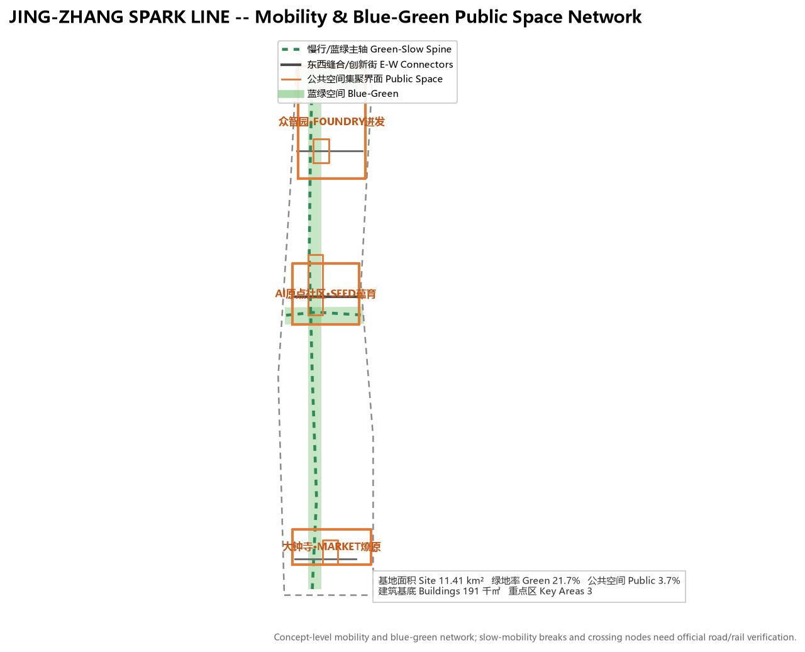
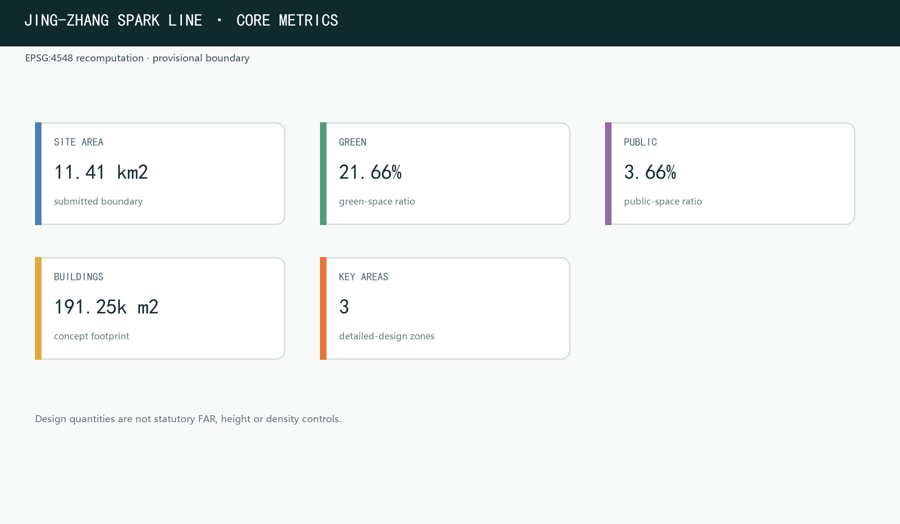

JING-ZHANG SPARK LINE / 京张·星火带
Taking the Jing-Zhang Railway - China's first self-designed, self-funded and self-operated trunk railway - as the source of the spark, the proposal develops 'JING-ZHANG SPARK LINE' naming and a structure of one Spark-Line spine, three zones (ignite - nurture - spread), two wings and an ecological corridor, evidenced by authoritative 2025-2026 Beijing/Haidian data on AI industry, employment and life, carrying the flame of self-driven innovation into an intelligent age.
Design Basis and Source Inventory
This proposal is anchored first on the Qualification Pre-Announcement for the Centennial Jing-Zhang AI Innovation Belt International Urban Design Open Call issued by the Haidian Branch of the Beijing Municipal Commission of Planning and Natural Resources. The announcement defines the three-level scopes, three key areas, design tasks and deliverable depth to which every section, layer and metric of this package responds Source. The second basis is the agent-facing open-call taskbook (brief/site-package/agent_taskbook.json), which defines ten co-creation principles, three positionings, five functions and six agent tasks (naming/Logo, ecosystem cases, scenario cards, pilgrimage landmarks, cultural narrative, long-term operation) - the direct source of the "Spark Line" concept system Source.
Machine-readable basis comes from the site package brief/site-package/ (design brief, allowed design space, enums, ranges, schemas and provisional boundary geometry) and data/source_registry.json use registrations Source. Site diagnosis builds on public facts: the Jing-Zhang Heritage Park Phase 1 (Qinghuadong Road-Zhichun Road, about 16.8ha) opened in June 2023, preserving the Qinghuayuan Station building whose name was inscribed by Zhan Tianyou (a Beijing cultural-protection unit); the surrounding area hosts the "Eight Great Colleges" of Xueyuan Road plus Qinghua, Peking, BJTU and CAS-system institutions (nearly 20 campuses), and Metro Line 13 serves Wudaokou, Zhichunlu and Dazhongsi stations Source.
Boundary status is declared throughout: the overall design area and three key areas use provisional geometry derived from brief/site-package/geometry/provisional_boundaries.geojson, marked provisional_constraint and official_boundary=false, usable only for generation, self-check, visualization and design discussion - never as an official redline, approval basis, precise-area basis or statutory control conclusion Source. The organizer's boundary data gap does not block content scoring; once official polygons arrive, all layers and metrics must be recalculated Spatial data.

Existing Conditions, Locked Gaps and Deepening Triggers
The proposal separates evidence into four maturity levels. Known inputs include only the announcement, registered site-package material, public facts and public statistics. Provisional constraints include only the repository's overall and three key-area polygons. Statutory controls, road redlines, river blue lines, heritage protection limits, ownership, existing buildings and utility capacity remain locked gaps. Once official files arrive, deepening follows the sequence of topology/metric recalculation, building-by-building renewal verification, and transport/utility/specialist safety review Depth Source. geometry/constraints.geojson intentionally remains an empty collection because no trusted official constraint geometry is available; this prevents invented redlines and does not imply an unconstrained site.

In the submission-stage matrices, complete means that the task response, gap diagnosis, concept design and deepening method are fully stated. It does not mean that statutory controls, parcel ownership, building-by-building renewal decisions, engineering feasibility or approval conclusions are complete Depth. The nine features in geometry/buildings.geojson are concept building footprints for spatial intent and recalculation, not an existing-building survey.
Three-Level Scope Framework
The proposal is organized by the three scopes defined in the announcement Standard. The coordinated research area (about 43.6 km²) addresses AI industry ecosystem, strategic positioning, innovation chain and future city form Depth; the overall design area (about 11.4 km²; this package recomputes 11,412,825 m²) addresses urban renewal framework, industrial spatial layout, transport/municipal support and city character Metric; the key detailed-design area (announced about 368.4 ha; recomputed 369.3 ha) addresses detailed design of the three key zones Metric.

The three scopes are not isolated drawings but "strategy - structure - parcel" progressive levels Depth: coordinated research decides industry chain and city form, overall design lands the judgment in renewal projects and spatial structure, and key-area detail design validates implementability at parcel level. The mapping between the three scopes and announcement tasks / agent.1-agent.6 is recorded in compliance_matrix.json; the prose keeps only readable judgments.
Coordinated Research Area: Industry and Future-City Study
Core Concept and Naming System
JING-ZHANG SPARK LINE（中文"星火带"）is the primary name. It derives from the Jing-Zhang Railway's historic status as China's first trunk railway designed, funded and operated independently - the origin where the spark of Chinese self-driven innovation was lit in 1909 Standard. "Spark" is read three ways:
- the flame of self-driven innovation: the Jing-Zhang Railway was built without foreign capital or personnel - the first spark proving "China can do it"; today this place continues with a new spark: "China can build large models and lead AI";
- the reality of AI technology: compute sparking at the fingertips, data emerging like sparks, innovation flaring in streets - "JING-ZHANG SPARK LINE" makes ordinary people realize AI is not an abstract concept but a touchable, participation-ready reality happening here;
- the national strategic spread: single spark - gathered kindling - prairie fire, echoing the State Council's "AI+" Action Opinion (Guo Fa [2025] No. 11) moving from pilot to penetration, from industry to employment Source.
The Logo direction is "track to spark": the herringbone rail abstracted into a bursting spark, with sparks along the track transitioning from still to burning, in jade green (growth/ecology) + warm orange (fire/energy) + electronic blue (compute), modern, extensible and internationally readable. The name is not a slogan: it is a spatial symbol (the Spark-Line spine), a cultural narrative (the flame of self-driven innovation) and an operation motif ("Spark Project" / "Spark Plan") in one Depth.
Three Positionings, Five Functions, Three Zones and Two Wings
JING-ZHANG SPARK LINE uses the Spark-Line spine to connect the three given positionings: the Centennial Jing-Zhang Culture Belt carries the spark memory, the Urban AI Life Experience Belt carries the prairie-fire life, and the AI Integration Innovation Belt carries industrial ignition Source. The five functions map to spatial anchors:
| Five functions | Spatial anchor | Core mechanism |
|---|---|---|
| AI full-stack self-driven innovation | Zhongzhiyuan (FOUNDRY - ignite) | Full-stack self-driven chips, models, frameworks, compute, data; accelerator clusters and open-source evaluation |
| World-class AI innovation ecosystem | AI Origin Community (SEED - nurture) | Campus origin, talent zone, open-source system, outcome transformation |
| AI+ scenario enablement new paradigm | Xiaoyue River scenario wing (OUTPUT) | Scenario test belt and intelligent urban vitality along Xiaoyue River |
| Intelligent AI vibrant city | Spark-Line spine | Smartened public space, slow mobility, AI-native life |
| Global voice in AI governance | Dazhongsi (MARKET - spread) | International awards, outcome launching, AI milestones and contribution monuments |
The three-zone two-wing loop: Origin Community nurtures centrally (ideas and talent), Zhongzhiyuan ignites northward (same direction as the railway's departure in 1909), Dazhongsi spreads southward (scenarios and formats), the Zhongguancun technology-service wing provides global-factor allocation and capital enablement, and the Xiaoyue River scenario wing provides scenario delivery and urban vitality experiments. The spatial route is the innovation-process narrative; innovation, industry, talent and city-service chains form a walkable spatial continuum along JING-ZHANG SPARK LINE Depth.
Global AI Innovation Ecosystem Case Study
The proposal selects six public cases as mechanism references (qualitative; no unverified investment figures) Source:
| Case | Model key points | Transferable mechanism |
|---|---|---|
| Kendall Square, Boston | MIT-anchored academic origin and AI conversion loop | Origin Community "campus-adjacent innovation, on-site transformation" |
| King's Cross, London | Railway hub redeveloped into a knowledge-innovation district | Isomorphic with Jing-Zhang: railway industrial heritage as innovation container |
| Jurong Lake District, Singapore | National lake-district new town with district governance integration | Zhongzhiyuan district governance, standards and safety display |
| Shenzhen | Scenario-driven innovation and continuous hardware-ecosystem upgrade | Dazhongsi AI-native commercial street "scenario as market" |
| Palo Alto / Silicon Valley | University-capital-industry closed loop | Zhongguancun wing capital and IP enablement |
| Zhongguancun itself | Electronics Street to science park to internet to AI | On-the-ground basis of the Spark narrative's "present layer" |
Experience translation follows four principles: heritage activation over demolition-rebuild; incubation density over building scale; governance and standards space upfront; scenario opening as investment attraction Depth.
AI-Native Planning Method and Differentiated Positioning
This proposal treats "AI participation in formal urban design" itself as a methodological demonstration, forming a reproducible evidence chain: public-data registration → provisional-constraint locking → GeoJSON topological partition → metric recalculation in EPSG:4548 → task/standard/depth matrix coverage → four-gate self-check, "evidence first, then lines", never substituting renderings or narrative for evidence Depth Source.
Unlike same-theme entries that focus on a single mechanism (clock-sync, heat reuse or service protocol), the Spark Line anchors on one thread: the "self-driven innovation spark" narrative plus the full-stack completion chain "basic research → incubation → capital/scenario", avoiding homogeneous naming and spatial structures Depth Source. The prose explicitly separates original concepts (the Spark-Line spine, the FOUNDRY-SEED-MARKET three-zone chain, the three-colour Logo, eight renewal projects) from transferred mechanisms (Kendall Square, King's Cross and others), keeping the original-vs-borrowed boundary auditable.
The planning method insists on "human-AI co-creation with professional final judgment": AI is responsible for reproduction, recalculation and alternative generation, while statutory conclusions are confirmed by professional teams and government authorities Standard; every "spark" landmark and operation mechanism is labelled as a concept suggestion for professional teams to deepen, not approved construction or a settled arrangement Depth.
To move "original" and "verifiable" into mechanisms, the proposal translates its core concepts into four reviewable AI-native design mechanisms. Each mechanism states its spatial carrier, operating logic, human-in-the-loop boundary and verification method, so reviewers can judge validity without relying on narrative:
| Original mechanism | Spatial carrier | Operating logic | Human boundary & verification |
|---|---|---|---|
| Spark-Line "three axes in one" | Jing-Zhang Heritage Park green axis | History, slow-mobility and innovation-scenario axes compound in one linear public space | Stitching, accessibility and peak flows verified by traffic simulation; concept-level, not a statutory green line |
| FOUNDRY-SEED-MARKET full-stack chain | Three zones laid out north-to-south | "Basic research → incubation → capital/scenario" spatialized along the innovation chain | Zone extents are provisional_constraint; inter-zone capacity calibrated by industry and transport studies |
| "Ignite-Nurture-Spread" node network | Ignition Plaza, Spark Origin Plaza, Spread Plaza | Three public scenarios map to outcome launching, spark memory, and milestone display | Venue capacity and evacuation verified by operation and fire-safety studies |
| Two-wing INPUT-OUTPUT loop | Zhongguancun service wing / Xiaoyue River scenario wing | Spatial closed loop of factor input and scenario output | Cross-zone effectiveness assessed by scenario launch rate and factor concentration |
All mechanisms keep a "reversible and deepenable" boundary: any of them can be adopted, adjusted or vetoed separately by professional review, and none is bound as a settled plan Depth Depth.
Original-concept identification table. To make the "originality" boundary auditable rather than rhetorical, each original concept carries its naming source, distinctive point, difference from same-theme entries, and a reviewable delivery item:
| Original concept | Naming source | Distinctive point | Difference from same-theme entries | Reviewable delivery item |
|---|---|---|---|---|
| JING-ZHANG SPARK LINE | The Jing-Zhang Railway's "spark of self-driven innovation" | "From one spark to a prairie fire" threads spatial and cultural lines together | Chooses a complete innovation chain as the single thread rather than a single mechanism motif | Three-zone two-wing structure + cultural narrative |
| FOUNDRY-SEED-MARKET chain | An industrial-image group of nozzle/seed/market | The whole journey "basic research → incubation → capital/scenario" spatialized | Maps the full-stack chain rather than strengthening a single zone | Three key-area designs + scenario cards |
| Spark-Line "three axes in one" | The composite value of the heritage-park green axis itself | History, slow mobility and innovation scenarios share one axis | Both memory and innovation are carried by the same spine | Slow-mobility stitching + blue-green public space |
| INPUT/OUTPUT two wings | The loop of factor input and scenario output | Zhongguancun and Xiaoyue River form a functional dual | Makes the two wings a design-governance closed loop | Scenario launch rate and factor concentration evaluation |
| Citizen compact of sparks | The "spark" meaning made public | Four rights of knowledge, participation, appeal and exit for AI public services | Turns digital inclusion from soft promise into a rights item | All-age and digital-inclusion floors + risk register |
The table lets reviewers trace each original concept along "naming source → distinctive point → difference → delivery item", and question or veto any concept separately without being bound by package-level naming monopsony Depth Depth.
AI-Era Industry and Employment Study (data-supported chapter)
This proposal uses authoritative 2025 and 2026H1 public data to argue AI-era industry development, employment creation and life scenarios. All data is registered in sources.json with institution/URL/year/access date and cited in prose via [source:...] Source:
- Personal AI penetration (national supplement): as of December 2025, China had 1.125 billion netizens with 80.1% internet penetration; generative-AI users reached 602 million (+141.7% vs end-2024) with 42.8% population penetration; digital-economy core industries reached 10.5% of GDP; digital consumption reached 17.92 trillion yuan (Jan-Nov 2025) Source.
- Beijing AI industry base (Beijing-first): Beijing's 2025 GDP reached 5207.34 billion yuan (+5.4%) with digital economy at 2416.63 billion yuan (46.4% of GDP) Source. Beijing's AI core industry is estimated above 450 billion yuan for 2025 (~half of the national total) with 2,500+ enterprises, about 40 AI unicorns and nearly 60 AI listed companies Source; 209 large models filed citywide (~1/3 of the national total) and 116 unicorns Source.
- Haidian industry base (Haidian-first): Haidian's 2025 GDP reached 1369.14 billion yuan (+7.2%); 123 filed large models (60% of Beijing); 92 national key laboratories (63.4% of the city); 349,404 valid invention patents; 4053.1 billion yuan technical-contract value; 110,396 yuan per-capita disposable income Source. JING-ZHANG SPARK LINE is the spatial carrier of this "AI industry highland + talent highland + innovation source".
- Infrastructure (Haidian/Beijing-first): Beijing operates 30 metro lines / 909 km, carrying 3.57 billion passengers in 2025; 1,252 bus routes carrying 1.60 billion; motor vehicles 8.101 million (incl. 988,000 new-energy); 153,000 5G base stations and 25.93 million 5G users (64.4% of mobile users) Source. JING-ZHANG SPARK LINE's "rail + slow mobility + instant logistics" composite system stands on this real urban-infrastructure base Depth.
- Talent and employment (Beijing/national): Beijing had 497,000 graduate students in study and 666,000 undergraduate/college students in 2025 Source; "AI Trainer" (4-04-05-05) entered the National Occupational Classification Code Source. The proposal responds through shared experimentation, outcome transfer and basic startup services; spatial scale and operation remain subject to later deepening.
- Consumption and life (enterprise/regional analysis of Beijing): the Xinhua × Meituan Research Institute "2025 Life-Service Consumption Trend Insight" shows Meituan life-service consumption orders grew 36% YoY in 2025 with ~60% Gen-Z share, and Beijing ranked in the top-10 "young-people lifestyle" cities Source; the 2024 China Night-Economy Development Report put Beijing #2 nationally in night-time dining consumption Source. Instant retail and local life drive the format organization of Dazhongsi's AI-native commercial street and 15-minute living circles around rail stations Depth.
- Mobility and transport (enterprise/regional analysis of Beijing): Amap's "2025 Annual China Major-City Traffic Analysis Report" shows Beijing ranks #1 nationally in green-travel willingness Source; Baidu Maps "2025 Q2 China City Traffic Report" puts Beijing #1 among 100 cities with a peak-commute congestion index of 2.102 (Chongqing 2.095, Guangzhou next) Source; Dida Chuxing's "2025 Carpool Commute Observation Report" lists Langfang-Beijing as a representative cross-city commute corridor with intra-city carpool speeds ~40 km/h Source. The Beijing Transport Institute's "2026 Beijing Transport Development Annual Report" shows 2025 Beijing green-travel share of 76.5% and a 4.8% decline in the peak congestion index Source. JING-ZHANG SPARK LINE responds to Beijing's real commute and congestion challenges with "slow-mobility first, rail connection, instant-logistics synergy, shared-mobility link" Depth.
Overall Design Area: Urban Renewal and Regulatory-Plan Depth
The overall design area requires regulatory-detailed-planning urban-design depth Standard. Absent official regulatory conditions, the proposal first establishes a reviewable method framework and structural judgments; all statutory conclusions are marked "pending official regulatory conditions" and never presented as approved limits Depth.
Overall spatial structure: "one Spark-Line spine + three-zone chain + two wings + ecological corridor". The Spark-Line spine is the Jing-Zhang Heritage Park green axis and its two-sided urban interface - history, slow mobility and innovation scenarios as one Depth. The three zones run north-to-south along the full-stack pipeline: Zhongzhiyuan (FOUNDRY - ignite) → AI Origin Community (SEED - nurture) → Dazhongsi (MARKET - spread), aligned with the "basic research → industry incubation → capital/scenario" complete chain Depth. The two wings are Zhongguancun (INPUT - factors) and Xiaoyue River (OUTPUT - scenarios); the Qing River-Xiaoyue River corridor links blue-green public spaces.
Urban renewal framework. A four-dimensional screen (land-use efficiency - building age - ownership complexity - rail-station accessibility) identifies renewal objects, distinguishing retain / renovate / renew / new-build; this package gives no parcel-level demolition/renovation conclusions Depth. Building scale and intensity: geometry/buildings.geojson expresses concept-level footprints Spatial data Metric; FAR, height, density, setbacks and road redlines are recorded as status=unknown until official regulatory conditions arrive, with recalculation paths in assumptions.json Depth.
Integrated-capacity assessment. An evaluation framework for rail passenger flow, public-service radius, municipal load and slow-mobility capacity is proposed Depth. Missing utility, energy, drainage, flood and fire engineering data are listed as formal deepening prerequisites; new infrastructure is framed around distributed energy, edge compute and smart public facilities.
Role chain of AI across the full urban-planning workflow. To show that "AI is a planning method, not a drawing tool", the proposal organizes AI participation in urban planning as a six-step closed loop from data to monitoring, with the AI responsibility and human/professional checkpoints stated for each step Depth:
| Step | AI responsibility (concept) | Human / professional checkpoint |
|---|---|---|
| Data registration | Auto-collect, normalize, deduplicate and register public data | Source credibility and usage boundary confirmed by humans |
| Problem identification | Identify site bottlenecks and opportunities from facts and data | Cross-checked with professional intuition to avoid misreading |
| Alternative generation | Generate multiple spatial/metric alternatives with rationale | Professional team compares to form a recommendation |
| Simulation and evaluation | Quick recalculation and capacity/accessibility checks | Statutory conclusions still decided by professionals and government |
| Scheme expression | Generate drawings and visualizations with traceable evidence | Charts never supersede the authoritative GeoJSON/metrics layer |
| Monitoring and re-check | Auto-recalculate when official data arrives, trigger deepening | Execute "rebuild topology - verify per building - specialist review" |
The loop responds to the "AI and urban-planning innovation" dimension and turns "human-AI co-creation with professional final judgment" into a reviewable process; AI output at any step can be independently reproduced or vetoed by professional teams Depth Standard.
Key Areas: Detailed Design
The three key zones each follow "positioning + spatial structure + building renewal + mobility + public space + AI scenarios + implementation risk", aligned with planning-comprehension-implementation depth Depth; all three polygons are provisional_constraint, so parcel-level conclusions are directional only Spatial data.

Zhongzhiyuan AI Acceleration Zone (FOUNDRY - ignite, announced about 192.1 ha)
Positioning: garden-style full-stack innovation district, the "ignition source" of the AI full-stack pipeline, hosting full-stack self-driven chips, models, frameworks, compute and data plus open-source model evaluation. Spatial structure: northern research, green, cultural and protective-space zones form the core cluster, with a low-carbon green innovation belt along the Qing River Spatial data. Building renewal: low-efficiency industrial land updated into accelerator clusters and shared labs. Mobility: north-5th-Ring external connection; the internal transverse innovation street seamlessly joins the north end of the Spark-Line spine Spatial data. Public space: "Ignition Plaza" hosts outcome launching and open testing Spatial data. AI scenarios: open-source model evaluation field, standards workshops, safety-governance display, low-carbon compute experience. Risk: Qing River blue line, ecology and flood conditions; compute infrastructure energy and network capacity require professional review.
Beijing AI Origin Community (SEED - nurture, announced about 104.3 ha)
Positioning: campus-adjacent outcome-transformation and talent community, the "nurturing place" of the AI full-stack pipeline. Spatial structure: anchored by the Qinghuayuan Station building (name inscribed by Zhan Tianyou, municipal cultural-protection unit) with a "Spark Origin" memorial and display; the Xueyuan Road university belt opens campus interfaces Spatial data. Building renewal: function replacement and ground-floor format renewal, preserving heritage station and cultural elements. Mobility: Wudaokou station integration; campus-park-street slow stitching Spatial data. Public space: "Spark Origin Plaza" (origin museum and "flame" installation) Spatial data. AI scenarios: inter-campus shared lab belt, open-source launch hall, outcome-transformation street, talent-zone services. Risk: campus boundaries and ownership, heritage review, station-integration coordination are to-be-confirmed.
Dazhongsi AI Industry Cluster (MARKET - spread, announced about 72.0 ha)
Positioning: urban smart-economy and international-exchange district, the "spreading field" of the AI full-stack pipeline. Spatial structure: organized around Dazhongsi station integration with a "Spread Transfer Lounge" and four-quadrant pedestrian connectivity Spatial data. Building renewal: southern commercial-service, research and green-space zones support an AI-native commercial street, scenario test fields and composite public-space use Spatial data. Mobility: rail connection first, with the Dazhongsi transverse link integrating non-motorized parking and the pedestrian network Spatial data. Public space: "Spread Plaza" hosts outcome launching and AI-milestone display Spatial data. AI scenarios: AI-native street, international roadshow lounge, data-element salon. Risk: rail-station modification, intersection engineering, international-event operation and clearance requirements.
AI Innovation Ecosystem, Talent Personas and AI+ Scenarios
The proposal organizes spatial and scenario needs around talent, enterprises, residents and governance Depth, grounding each scenario in the authoritative data above (602M generative-AI users, AI talent gap, instant retail, parcel logistics) Source.
| User persona | Typical needs | Spatial response |
|---|---|---|
| University researcher (SEED) | Inter-campus experiments, outcome transformation | Inter-campus shared lab belt, origin museum, launch hall |
| Startup teams / makers (FOUNDRY) | Low-cost workspace, shared experiments, product validation | Accelerator cluster, shared startup space, open-source evaluation field |
| Developer / open-source contributor (Spine) | Collaborate, launch, test, reputation | Spark Plaza open-source co-creation space, contribution honor wall |
| Local resident / elderly | Health, mobility, life services | Urban health station, barrier-free commitment |
| Youth creator / student (Wudaokou/Xiaoyue) | Creation tools, social, night vitality | Youth creation cabin, AI-native street |
| International visitor / investor (Dazhongsi) | Display, roadshow, business | Spread Plaza, international roadshow lounge |
At least 10 scenario cards are provided, including 3 industry test/validation scenarios:
| Scenario card | Spatial carrier | Type | Data source & governance boundary |
|---|---|---|---|
| 01 Open-Source Launch Hall | AI Origin Community | Public service | Public code and project metadata; aggregated activity data |
| 02 Safety-Governance Sandbox | Zhongzhiyuan | Industry test/validation | Controlled test data; evaluation and red-team testing require authorization |
| 03 Edge-Compute Hub | Overall design nodes | New-infrastructure prototype | Energy and compute operation data; privacy minimized |
| 04 AI Slow-Mobility Navigation | Spark-Line spine | Public service | Explainable wayfinding and low-intrusion sensing; gap identification requires human review |
| 05 Dazhongsi International Roadshow Lounge | Dazhongsi | Industry display | Corporate cases require clearance; business data confidential |
| 06 Qing River Low-Carbon Innovation Corridor | Zhongzhiyuan riverfront | Industry test/validation | Environmental and stormwater data; public ecological indicators |
| 07 Campus Outcome-Transformation Street | AI Origin Community | Industry service | Research and IP require authorization |
| 08 Data-Element Salon | Dazhongsi area | Industry test/validation | Circulation requires compliance, authorization and auditability |
| 09 AI Instant-Retail Sample Street | Community-commerce junction | Public service | Anonymous aggregated order data; no-algorithm consumption channel. Grounded in Beijing's top-10 young-people lifestyle ranking and #2 night-time dining index, making the "15-minute instant-retail circle" a real passenger reality Source |
| 10 Global AI Festival Week Route | Belt-wide public space | Operation event | Aggregated event data; copyright and portrait clearance |
These scenarios anchor to specific layers: public-space scenarios cite Spatial data, mobility scenarios cite Spatial data, open-space scenarios cite Spatial data. The three industry test/validation scenarios (low-speed autonomous driving test corridor, open-source model evaluation field, AI instant-retail/logistics delivery test belt) all follow the "limited range, low speed supervised, human takeover" boundary.
All-age and digital-inclusion design floors. So that "intelligence-native" excludes no group, the proposal makes digital inclusion a mandatory gate for every scenario card rather than an option. Four floors are specified Source:
- Non-algorithm consumption channels: instant retail, mobility wayfinding and roadshow booking are all reachable through human counters, telephone and physical signage; anyone can get equivalent service without a phone or app Depth;
- Low digital-literacy friendly: public-space interactive devices offer large-print, voice and human-assistance modes, and complex operations never appear on mandatory routes;
- All-age accessible: gap stitching and crossing-node schemes include wheelchair, pram and senior walking-circle checks; spark landmarks provide tactile and audible guidance Source;
- High-sensitivity-person protection: any scenario requiring facial or behavioural recognition is "informed first, avoidable, with a non-recognition alternative path", and physical exclusion zones are set for children and high-sensitivity groups Depth.
These floors enter the verification methods of renewal projects and scenario cards as common acceptance items, making them an auditable public-interest commitment rather than a stand-in for statutory accessibility standards Depth.
Spark-Line AI public-service assurance mechanism (disclosure - participation - fallback). To make AI public services both transparent and inclusive, the proposal establishes three assurance mechanisms based on current statutory systems, as default preconditions for all AI scenarios Source Source:
| Assurance mechanism | Statutory anchor (current law/norm) | Implemented content (concept) | Spatial and governance delivery |
|---|---|---|---|
| Information disclosure and notice | PIPL notice rules; Interim Measures on Generative-AI Service Management labelling duties | State the purpose and impact when a service uses AI; explain complex decisions | Scenario-card "data source & governance boundary" column mandatory; observable signage |
| Participation and public notice | Regulatory-planning publicity and hearing under the Urban and Rural Planning Law; Barrier-Free Environment Law | Publish schemes and collect opinions; set public-collection stages for scenario choice, test scope and acceptance criteria | Planning publicity, scenario open days, Spark Open Week, regular public testing Source |
| Fallback and feedback | Beijing 12345 hotline, "immediate response" (Jiesuji); government-service "good/bad reviews" | Complaints about AI services get human review; no forced use; human and non-algorithm alternative channels provided | Human service desks, complaint and feedback entries, non-algorithm channels, identification-avoidance zones Source |
The three mechanisms do not replace statutory remedies but turn "transparency, participation and fallback" into measurable scenario-acceptance conditions: any scenario card that cannot satisfy all three at once may not advance to the next deepening stage Depth Depth.
Spark-Line MCP service collection (concept direction). To let the public scenarios above be accessed uniformly by people, enterprises and future agents, the proposal offers a "Spark-Line MCP service collection" as a concept for the service-access layer. MCP refers to open model-context protocols (a family of open access standards for tools/data/services) Source; the proposal borrows the "unified protocolized service interface" idea to compose a set of city public-service interfaces. Everything is stated as a concept suggestion - no particular built system or vendor dependency is promised Source Depth:
| Service interface (concept) | Related public scenario | Unified access content | Use and governance boundary |
|---|---|---|---|
| Livelihood-services interface | AI instant retail, health station, life services | Query and booking of nearby instant retail / life services | Order data anonymized-aggregated; human counters and non-algorithm channels kept |
| Mobility-and-space interface | AI slow-mobility navigation, slow gaps, public space | Slow-path query, accessibility info, opening hours | Gap data requires human review; privacy minimized |
| Launch-and-roadshow interface | Open-source launch hall, international roadshow lounge, outcome-transformation street | Roadshow/launch schedule query and booking | Business data confidential; corporate cases require clearance |
| Test-and-evaluation interface | Safety-governance sandbox, open-source model evaluation field | Controlled test and evaluation application, result release | Authorization and audit required; test data controlled |
| Event-and-feedback interface | Spark Open Week, activity route, complaints | Event registration, route guidance, opinion and complaint submission | Activity data aggregated; Jiesuji (immediate-response) channel merged into feedback |
The collection upgrades "scenario cards" from one-time displays into continuously accessible service interfaces, letting residents, enterprises and agents use public services over one common specification; no interface waives the existing assurance mechanisms (disclosure - participation - fallback) or the four governance defence lines Depth Depth. Interface design, permission model, security and data-compliance approaches must be deepened by professional teams and licensed before implementation; the proposal claims no completed system integration or other commitment Source.
Land Use, Building Scale, and Retain / Renovate / Demolish
Land use follows the Guidelines for Classification of Land for National Territorial-Spatial Survey, Planning and Use Control, complete, closed and gapless Standard. geometry/land_use.geojson divides the overall design area into research, education, culture, commercial, residential, local-service, park green, protective green and reserve parcels - 18 zones covering the full submitted boundary without overlap Spatial data. Green and public-space ratios support innovation exchange and ecological quality Metric.
The building scheme distinguishes retain / renovate / renew / new-build / to-be-confirmed Depth. Without existing-building, ownership and regulatory conditions, no parcel-level demolition/renovation conclusion is fabricated; concept footprints in geometry/buildings.geojson express renewal direction Metric. Statutory indicators (FAR, height, density, setbacks) are uniformly status=unknown, to be recalculated when official regulatory conditions arrive; concept volumes are never presented as approved limits Depth.
Transport, Rail, Municipal and Public Services
The transport scheme responds to rail-station integration, road micro-circulation, slow-mobility gaps, external transport, parking and instant-logistics synergy, focusing on the North 5th Ring crossing nodes, Wudaokou, the west end of Qinghuadong Road, Dazhongsi station and anchor-company access Depth. geometry/roads.geojson expresses the Spark-Line slow spine, east-west stitching roads, innovation streets and the Xiaoyue River blue-green corridor Spatial data. The scheme uses Beijing's 2025 rail-transit figures (3.57 billion passengers, near-10 million daily) to argue the "rail + slow mobility + instant logistics" composite mobility potential Source.

Municipal and new infrastructure spans AI industry-service facilities, innovation service platforms, talent life services, distributed energy, edge compute and conventional municipal integration Depth. Missing utility, energy, drainage, flood and fire data are listed as formal deepening prerequisites.
Blue-Green Space, Public Space and City Character
The blue-green scheme takes the Spark-Line spine as the skeleton and integrates Qing River, Xiaoyue River, campus, enterprise and community movement into connected north-south and east-west walking, cycling and green-space networks Depth. geometry/green_space.geojson expresses park green, protective green and blue-green corridors Spatial data, and geometry/public_space.geojson expresses public-activity interfaces Spatial data.
City character fuses Jing-Zhang railway heritage, Zhongguancun innovation culture and AI new culture Standard. At least 3 AI pilgrimage landmarks are proposed: Spark Origin (Qinghuayuan Station area - the material carrier of the first self-driven innovation station), Spark Co-creation Plaza (open-source co-creation node on the spine, with developer walking path, open-source outcome gallery and agent contribution honor wall), and Spread Plaza (Dazhongsi, AI milestones and outcome launching). Landmarks, wayfinding, Logo, fonts, images, portraits and corporate marks all require clearance; concepts must not be sensationalized or presented as approved construction.
The cultural narrative runs "from one spark to a constellation": 1909 the Jing-Zhang Railway lit the spark of self-driven innovation (engineering source) → 1980s Zhongguancun's Electronics Street ignited the innovation economy (industry source) → 2026 open source + Agent continue the intelligent-age spark here (human-AI co-creation source). International communication copy: "From the first spark to a constellation."
Renewal Project List, Policy and Phasing
The proposal forms an auditable renewal project list Depth. geometry/phasing.geojson expresses the phased extents Spatial data. Each entry states the implementing body, service target, time phase, quantified target, resource tools and verification method, so that the list is actionable rather than concept-only:
| ID | Project | Type | Implementing body | Service target | Phase | Quantified target | Resource tools | Verification |
|---|---|---|---|---|---|---|---|---|
| JZ-01 | Spark-Line slow-mobility gap stitching and crossing nodes | Public space / transport | Planning, transport authorities & street offices | Commuters, visitors, all-age residents | Near-term (P1) | Stitch ≥6 gaps, add/upgrade ≥4 crossing nodes | Road redlines, underbridge space, traffic-special study | Traffic simulation recalc + resident survey |
| JZ-02 | Spark Origin Museum and flame installation | Culture / urban renewal | Heritage, culture & tourism authorities + station manager | Citizens, visitors, school groups | Near-term (P1) | 1 culture anchor built, ≥100k annual visitors | Heritage review, station activation plan | Heritage acceptance + visitor monitoring |
| JZ-03 | Zhongzhiyuan accelerator cluster and open-source model evaluation field | Industry / urban renewal | Zhongguancun Science City council + operator | AI startups, open-source developers | Mid-term (P2) | ≥500 shared workstations, field capacity ≥200 | Ownership consolidation, compute & energy study | Quarterly occupancy & field-use review |
| JZ-04 | Qing River innovation interface, Zhongzhiyuan | Blue-green / industry display | Landscape, water authorities + park operator | Enterprise staff, nearby residents | Mid-term (P2) | Blue-green frontage ≥800 m, ≥20 display units | River blue line, ecology & flood study | Ecological monitoring + display refresh rate |
| JZ-05 | Dazhongsi four-quadrant connectivity and Spread Transfer Lounge | Rail integration / mobility | Rail company, transport & planning authorities | Commuters, visitors, investors | Mid-term (P2) | 100% four-quadrant connectivity, transfer ≤5 min | Rail station, intersections, municipal utilities study | On-site walk test + transfer-time tracking |
| JZ-06 | Spread Plaza and AI-milestone venue | Culture / operation | Organizer & operator | International visitors, dev community, public | Mid-term (P2) | 1 public venue built, ≥20 events/year | Public-space permits, event safety, copyright clearance | Safety-plan review + attendance stats |
| JZ-07 | Inter-campus shared lab belt nodes | Research collaboration / public service | University consortium & research management | Researchers, cross-campus teams | Long-term (P3) | ≥10 open nodes, ≥200 instruments online | Campus boundaries, ownership, data-compliance agreements | Platform usage + data-security audit |
| JZ-08 | Xiaoyue River scenario test belt | Blue-green / scenario | Landscape, water authorities & scenario operator | Founders, residents, testing firms | Long-term (P3) | Test belt ≥1.5 km, ≥15 scenarios housed | River blue line, scenario rules & operator | Scenario launch rate + safety registration check |
Phasing proposes near-term pilots, mid-term renewal and long-term governance Depth: near-term (P1) starts with a Spark-Line pilot segment and lightweight operation facilities; mid-term (P2) advances Dazhongsi-Origin synergy renewal; long-term (P3) implements the Zhongzhiyuan self-driven innovation governance framework. For task 06, the proposal designs a "Spark Open Week" annual event system, scenario open days, developer-community operation, international communication and acquisition-conversion mechanism, all expressed as concept suggestions or deepening directions, never as confirmed government arrangements; concrete bodies, budgets and schedules must be finalized by professional teams and government review Source.
Implementation governance and stakeholder framework (concept). To give the eight renewal projects actionable governance handles, the proposal provides an initial mapping of stakeholders and decision links. All roles are concept suggestions for later governance study:
| Stage | Main stakeholders | Concept responsibility | Decision & prerequisites |
|---|---|---|---|
| Zhongzhiyuan accelerators | Science City council, park operator, AI startups | Carrier supply, evaluation admittance, compute & energy | Ownership consolidation, compute study, energy assessment |
| Origin shared labs | University consortium, research management, campuses | Equipment onboarding, outcome transfer, talent services | Campus boundaries, data-compliance agreements |
| Dazhongsi roadshow & market | Rail company, operator, international host | Station-city integration, venue operation, clearance | Station works, event safety, copyright clearance |
| Spark-Line public life | Street office, transport, heritage, community | Gap stitching, accessibility, digital-inclusion floors | Road redlines, heritage review, resident participation |
| Long-term governance & operation | Government review, professional teams, dev community | Final decision, list re-verification, continuous monitoring | Every renewal project closed-loop checked by "implementing body + verification method" Depth Depth |
The mechanism stresses a three-way division of "AI proposes, professionals argue, government decides": this package provides complete evidence and alternatives without replacing statutory decisions; every renewal project can be traced back to its implementing body and service targets, forming an auditable delivery chain.
Indicator System, Area Recalculation and Compliance
The indicator system covers overall-design-area area, key-area area, green and public-space ratios, building footprint, renewal-project count, AI scenario nodes, mobility connectivity, industry space and talent-service indicators Depth. All known indicators are recomputed from submitted geometry in EPSG:4548 in metrics.json; unknown indicators state their reason and formal-submission prerequisites.
| Indicator | Value | Meaning |
|---|---|---|
| Overall design area | 11,412,825 sqm | Reference extent for spatial layers and metrics Metric |
| Green area / ratio | 2,471,521 sqm / 21.7% | Supports ecological quality and innovation exchange Metric |
| Public space area / ratio | 417,316 sqm / 3.7% | Supports innovation exchange, events and public experience Metric |
| Building footprint | 191,251 sqm | Concept-level design quantity, not a statutory value Metric |
| Key areas | 3 | Count check of the three key zones Metric |

The compliance matrix is the master response-control file: compliance_matrix.json covers announcement tasks 1.3, 1.4, 1.5 and agent.1-agent.6; standard_matrix.json covers all mandatory professional standards; design_depth_matrix.json covers all mandatory design-depth items. A proposal missing any mandatory task cannot enter formal professional scoring.
Risk, Copyright and Compliance
This proposal provides complete bilingual deliverables, with proposal.md as the equivalent counterpart of this English file Depth. The source, license and authorization status of all images, icons, data and code assets are stated in sources.json and report/copyright_statement.md. This proposal is AI-agent generated; all spatial recommendations are concept suggestions, reference schemes or material for professional teams to deepen, and do not replace formal planning or constitute government conclusions, and involve no unauthorized trademarks, fonts, images, portraits or copyrighted material.
This proposal does not claim official approval, approved regulatory planning, final land ownership, final building scale or guaranteed implementation. The AI agent is responsible for facts, sources, copyright, spatial data, indicators and expression. Data such as the 5-million AI talent gap is an industry estimate, marked low-confidence in sources.json and cited at reduced level.
Explicit unmitigated-risk register. To avoid "blank-slate-as-disclaimer" wording, the proposal lists the core risks that remain unmitigated and require professional and official intervention, with accountability direction Depth:
| Unmitigated risk | Current status | Trigger / responsible engine | Mitigation path |
|---|---|---|---|
| Official boundary and controls unpublished | All areas/metrics provisional | Official polygons released | Recompute in EPSG:4548 and rebuild topology |
| Existing buildings and ownership missing | No demolition/renovation conclusion | Building survey and ownership data arrive | Review by "retain-renovate-renew-new build" |
| Rail/municipal engineering conditions unknown | Concept networks and interfaces pending | Specialist engineering reports | Rail interface, utility, flood and fire specialties |
| Compute and energy load assumptions | Edge/distributed energy are concept directions | Energy and network study | Revise against measured load |
| Data compliance and clearance duties | All scenarios carry governance boundaries | Clearance before scenario start | Clear copyright/portrait/privacy item by item Depth Source |
This register lets review and later deepening close out items one by one, avoiding unproven claims being treated as settled facts.
Four defence lines of AI governance. As a positive construction of the risk-compliance dimension, the proposal puts four governance defence lines across all AI scenarios, each with its carrier and implementation conditions Depth Source:
| Defence line | Requirement (concept) | Spatial/governance carrier | Implementation prerequisites |
|---|---|---|---|
| Data compliance | Data collection and use need disclosure, authorization and auditability | Data-element salon, data-compliance agreement templates | Data-source registration, permission tiers, audit logs |
| Explainability | AI behaviour and decisions can be understood by non-expert users | Explainable wayfinding in paths like AI slow-mobility navigation | Explanation-layer design, plain-language terminology |
| Human takeover | Humans can take over at any time in complex or risky scenarios | Operations/safety desks, human service counters | Duty staffing, takeover plans and drills |
| Accountability | Every AI service has a clear responsible body | Scenario-card responsible-party statement, decision links | Service registration, responsibility matrix, review mechanism |
The four lines are consistent with the spirit of current governance requirements such as the Interim Measures on Generatorative Artificial-Intelligence Service Management, but are expressed as concept suggestions; no line waives legal obligations or replaces regulatory approval Source Depth.
References
- Qualification Pre-Announcement for the Centennial Jing-Zhang AI Innovation Belt International Urban Design Open Call (Haidian BPNR, 2026-05-09)
- Agent-facing open-call taskbook excerpt for the Jing-Zhang AI Innovation Belt Urban Design (user-provided cleared material)
- CNNIC, 57th Statistical Report on China's Internet Development (2026-02, original official link)
- Beijing Statistics Bureau, 2025 Beijing Economic and Social Development Statistical Bulletin (2026-03-25, official text)
- Haidian Statistics Bureau, 2025 Haidian Economic and Social Development Statistical Bulletin (2026-04-10, official text)
- Beijing Municipal Science & Technology Commission / Zhongguancun, Beijing AI Industry Whitepaper (2025)
- Beijing Municipal Development & Reform Commission, 2026 AI Innovation Highland Building Conference release
- State Council, Opinions on Deepening the Implementation of the "AI+" Action (Guo Fa [2025] No. 11)
- MOE, Undergraduate Major Catalog (2025) additions
- Beijing Transport Institute, 2026 Beijing Transport Development Annual Report (green-travel share 76.5%)
- Amap, 2025 Annual China Major-City Traffic Analysis Report (Beijing green-travel willingness #1)
- Baidu Maps, 2025 Q2 China City Traffic Report (Beijing peak-commute congestion index 2.102, #1)
- Dida Chuxing, 2025 Carpool Commute Observation Report (Langfang-Beijing cross-city commute)
- Xinhua × Meituan Research Institute, 2025 Life-Service Consumption Trend Insight (Beijing top-10 young-people cities)
- Meituan Research Institute, 2024 China Night-Economy Development Report (Beijing night-time dining #2)
- Law of the People's Republic of China on Building an Accessible Environment (entered into force 2023-09-01; official public text) Source
- Interim Measures on Generative Artificial-Intelligence Service Management (CAC and six other bodies; entered into force 2023-08-15; official public text) Source
- Personal Information Protection Law of the People's Republic of China (in force since 2021-11-01; official public text) Source
- Urban and Rural Planning Law of the People's Republic of China (2019 amendment; official public text; publicity-hearing procedure) Source
- Model Context Protocol public specification (open tool/service-integration standard led by Anthropic; official specification site, public) Source
- Urban Design Management Measures; Regulatory Detailed Planning Measures; National Land-Use Classification Guidelines
- Full machine index:
sources.json,metrics.json,compliance_matrix.json,standard_matrix.json,design_depth_matrix.json - Copyright and licensing:
report/copyright_statement.md
The bibliography and local snapshots above form the bibliographic entry point for the proposal's judgments; their full provenance, license and use boundaries are governed by sources.json and data/source_registry.json Source Source.